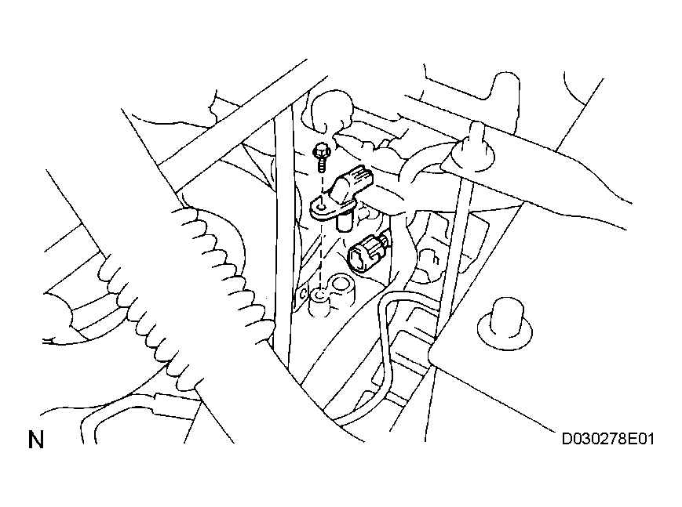

Transmission Revolution Sensor: Installation
WARNING: This page is about a different variant/trim than selected.
- INSTALL TRANSMISSION REVOLUTION SENSOR
- Coat a new O-ring with ATF.
- Install the O-ring to the transmission revolution sensor.
- Install the sensor with the bolt.

Courtesy of © TOYOTA, LICENSE AGREEMENT TMS1002Torque: 5.4 N*m (55 kgf*cm, 48 in.*lbf)
- Connect the connector.
- INSTALL AIR CLEANER BRACKET
- Install the air cleaner bracket with the 2 bolts.
Torque: 19 N*m (195 kgf*cm, 14 ft.*lbf)
- Connect the wire harness clamp to the air cleaner bracket.
- Install the air cleaner bracket with the 2 bolts.
- INSTALL AIR CLEANER ASSEMBLY
- Install the air cleaner (see INSTALLATION ).